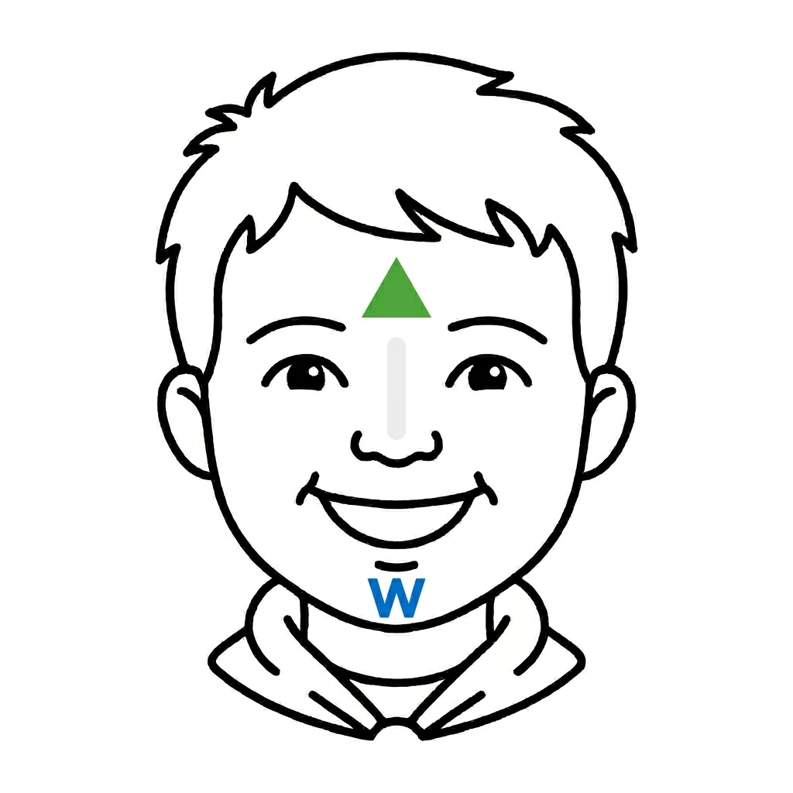

The Speaker's Guide
Narrator: Webelos, you have reached the summit of your Cub Scouting journey. You have proven yourself in the outdoors, in your community, and in your character. You are no longer just Cub Scouts; you are preparing to become Scouts BSA.
As you prepare to cross the bridge into the world of Scouting, we mark your final milestones as Webelos.
First, we place a green leaf upon your forehead. This represents your growth and your connection to the nature you have learned to respect and protect. It shows you are rooted in Scouting values.
Next, we draw a white line down your nose. This is the mark of integrity. It reminds you to always walk a straight path and to be "Loyal" as the Webelos name promises.
Finally, we place a blue 'W' upon your chin. This stands for "Webelos"—We'll Be Loyal Scouts. It is a promise to yourself and your fellow Scouts that you will carry the Scout Oath and Law into your new adventure.
Webelos, the bridge is open. Cross over with pride!

The Painter's Reference